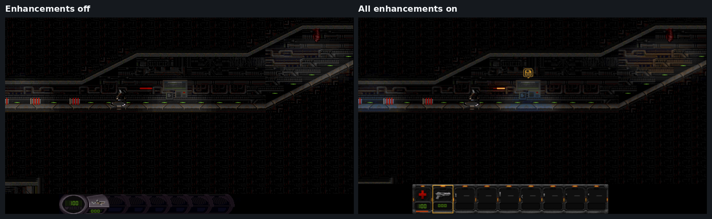
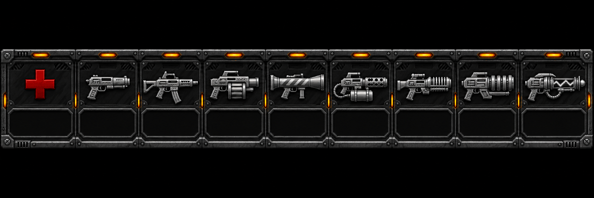
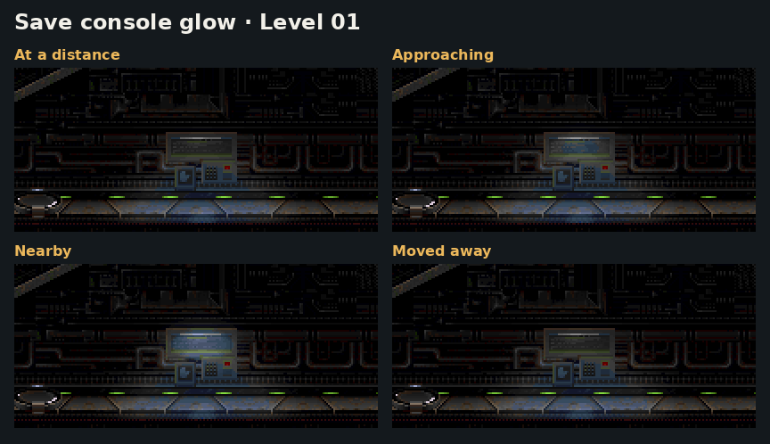

Lighting and weapon effects
Warm and cool fixtures light the scenery. Nearby walls catch flashes and reflections, and weapons leave tapered beams and short trails.
SDL3 source port
The original side-scrolling action game with widescreen play, enhanced lighting, smoother motion, and dual-stick controls.
Get Abuse Modern
Warm and cool fixtures light the scenery. Nearby walls catch flashes and reflections, and weapons leave tapered beams and short trails.
Switch to a 640×360 view to see more of the level. The camera and objects interpolate at up to 60 frames per second, with an optional smooth pixel filter.
Health, ammo and weapon slots sit in a centered strip that stays easy to scan during play.

Save consoles light up as you approach, and the game confirms when your progress is saved.

Landing shots flashes a crisp hit-marker at your reticle, damaged enemies flash bright and show a compact health bar, and a subtle crimson edge vignette signals incoming hits or critical health.
A responsive reticle pulses as you fire, highlights when aimed over a target, and displays a subtle indicator when ammo runs low or empty.
Jump directly to any weapon with 1–8 or press Q to toggle back to your previous weapon mid-fight, with a brief weapon and ammo badge.
Off-screen doors, lifts, and enemy alerts show subtle edge indicators so you can track nearby threats and level events.
See GitHub Releases for published versions and packages.
Release notesEXE installer
Run Setup, then open Abuse Modern from the Start menu. The installer is unsigned.
TAR.GZ archive
Extract the archive and run ./play from the extracted folder. Built on Ubuntu 24.04.
DMG disk image
For Macs with an Apple chip. Open the disk image and run Play Abuse Modern.command.
DMG disk image
For Macs with an Intel processor. Open the disk image and run Play Abuse Modern.command.
You can also find the setup file in the windows-x86_64-installer artifact from the latest successful GitHub Actions build.
On first launch, use the launcher to download Abuse 0.8 game data or import it from an existing archive or folder.
All releases